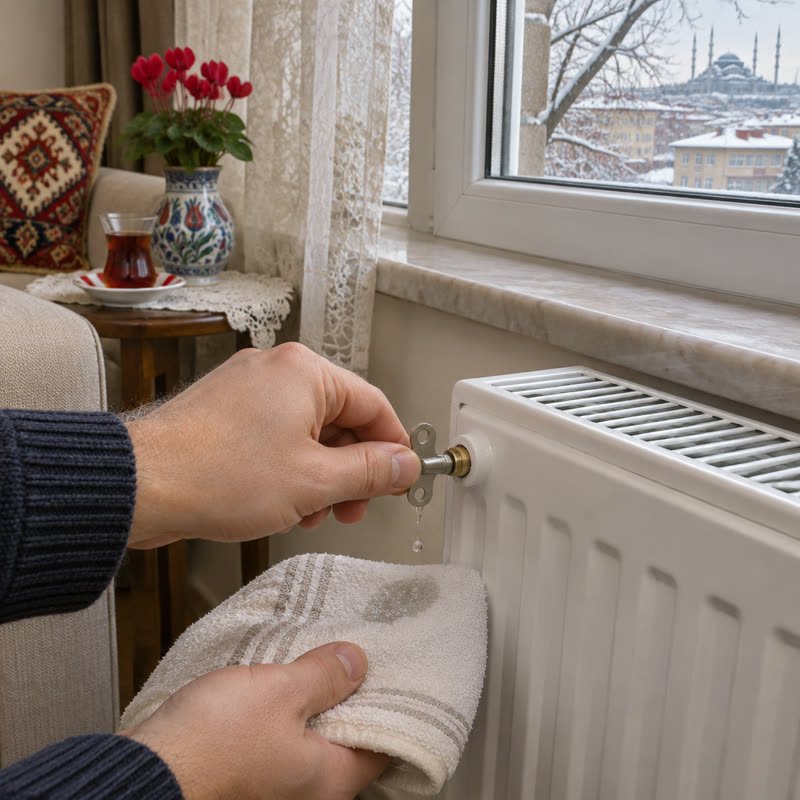

5,0 Google'da 45 müşteri yorumu
Kombi arızası, yıllık bakım ve petek temizliği. Göstergeye bakın, belirtiyi seçin, ustamız size dönsün.
Kombiniz kaç bar gösteriyor?
Kombinin ön panelindeki basınç göstergesine bakıp ibreyi ayarlayın.
bar
Normal aralık
Çalışan bir kombide çoğunlukla 1–2,5 bar arası görülür.
Gaz kokusu mu var?
Düğmelere dokunmayın, pencereleri açın, sayaç vanasını kapatın ve 187 Doğalgaz Acil'i arayın.
187'yi araBrülör ve eşanjörKurum ve kireç temizliği, alev ayarı
Baca gazıAtık gazın dışarı doğru çıktığının kontrolü
Genleşme tankıÖn basınç ölçümü ve gerekirse tamamlama
Emniyet ventili ve sensörlerAşırı basınç ve sıcaklık korumalarının testi
Gaz sızdırmazlığıBağlantı noktalarında kaçak kontrolü
Ne zaman bakım yaptırmalı?
Bakım için en uygun aylarKombinin en çok çalıştığı aylar
Isıtma sezonu başlamadan yapılan bakım, kışın ortasında kombinin durması ve randevu için beklemek zorunda kalmanın önüne geçer.
